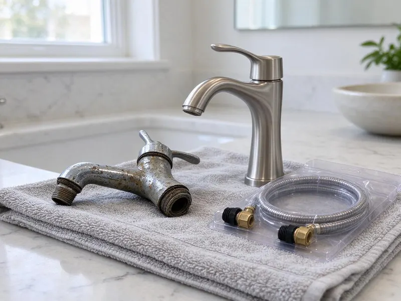
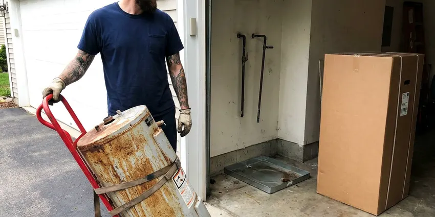
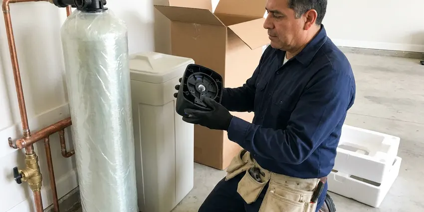
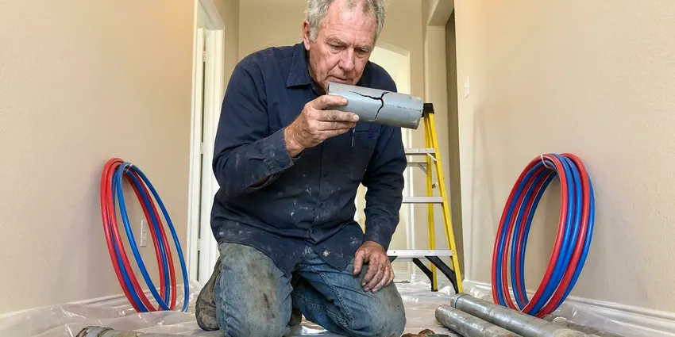

Well Pump Replacement in League City, TX
Don't let a broken well pump interrupt your water supply. DFJ Plumbing offers expert replacement services for homes in League City, TX.
- Fast Well Pump Service
- Licensed & Insured Plumbers
- Upfront Pricing
- Texas Water Well Experts

Need a New Well Pump? Get Expert Replacement Service in League City, TX.
Contact DFJ Plumbing today for a reliable well pump replacement that lasts for years.
Trusted Well Pump Replacement Services in League City, TX
DFJ Plumbing specializes in professional well pump replacement, ensuring your home in League City has a consistent and clean water supply. We understand the critical role a well pump plays, especially for properties not connected to municipal water.
Our expertise includes:
- Submersible and Jet Pump Experts
- Pressure Tank & Switch Integration
- Years of Texas Well System Experience

Additional Plumbing Replacement Services in League City, TX
When repairs are no longer enough, our replacement services in League City, TX deliver durable upgrades that restore full performance.


League City water heater replacement specialists

Water Softener Replacement in League City


Customers
Why Choose DFJ Plumbing for Well Pump Replacement in League City, TX?
Choosing the right well pump and ensuring proper installation is crucial for long-term performance. We make sure your new system is perfectly matched to your well and water demands.
- Accurate Diagnosis, We pinpoint the exact cause of your well pump failure before recommending replacement, saving you time and money.
- Quality Pumps, We install only reliable, high-efficiency well pumps designed to provide years of trouble-free service for your home.
- Code Compliance, All our well pump replacements adhere strictly to local League City and Texas plumbing codes for your safety and peace of mind.
Citywide Coverage
From the bustling city center to the quieter outskirts, DFJ Plumbing provides comprehensive well pump replacement coverage throughout League City. Our technicians are familiar with the varied well depths and water tables common in our Texas communities.
Experienced Team
The DFJ Plumbing team is composed of highly skilled and licensed plumbers who have successfully completed countless well pump replacements. Their expertise guarantees a professional and efficient job for every League City homeowner.
Safety-First Approach
Safety is paramount in all well pump replacement projects, especially with electrical components and deep well access. We strictly follow all safety protocols and ensure installations meet or exceed Texas plumbing and electrical codes.
Trusted Certified League City Plumbing Services Professionals
At DFJ Plumbing, we take pride in providing licensed, certified plumbing services throughout League City, TX. Backed by recognized industry credentials, our experienced plumbers combine technical skill with genuine customer care. Whether it is repair, installation, or maintenance, we follow strict safety and quality standards to deliver lasting results you can trust.
Call Us Now PHCC Plumbing Contractor Recognition
PHCC Plumbing Contractor Recognition Better Business Bureau (BBB) Accreditation
Better Business Bureau (BBB) Accreditation Angi Certified Pro
Angi Certified Pro ISO 9001 Quality Management Certification
ISO 9001 Quality Management CertificationDependable Well Pump Replacement Services in League City, TX
Submersible Well Pump Replacement in League City
Submersible pumps are common for deeper wells, as they operate submerged within the well casing. When these powerful pumps fail due to wear, electrical issues, or sediment, replacement requires specialized tools and expertise. Our technicians safely retrieve the old pump, inspect the well, and install a new, high-efficiency submersible unit, ensuring proper depth and electrical connections for homes in League City.

Jet Pump Replacement in League City, TX
Jet pumps are typically used for shallower wells and are located above ground, drawing water up through a suction pipe. Common issues include motor failure, impeller damage, or pressure switch malfunctions. DFJ Plumbing provides expert jet pump replacement, ensuring correct sizing and pressure tank integration. We make sure your new jet pump delivers consistent water pressure throughout your League City, TX property.
Well Pressure Tank Replacement in League City
While not the pump itself, a failing pressure tank can mimic well pump issues, causing short cycling or inconsistent pressure. Often, when a well pump is replaced, the pressure tank is also nearing the end of its life. DFJ Plumbing can replace your well pressure tank alongside your pump, optimizing your entire well water system for longevity and efficiency for homeowners in League City.
Well Pump Electrical Troubleshooting & Replacement in League City, TX
Many well pump failures stem from electrical problems, such as faulty wiring, a tripped breaker, or a burned-out motor. Our licensed plumbers are also skilled in electrical diagnostics related to well systems. We identify if the issue is electrical or mechanical, and if necessary, replace the pump motor or the entire unit, ensuring all electrical components are safe and up to code in League City, TX.
Emergency Well Pump Replacement in League City
A sudden well pump failure can leave you without water, creating an immediate emergency. DFJ Plumbing offers emergency well pump replacement services to restore your water supply as quickly as possible. We understand the urgency, especially in rural areas of League City relying solely on well water, and prioritize rapid response to get your system back online.
Grundfos Well Pump Replacement in League City, TX
Grundfos is a leading brand known for its reliable and energy-efficient well pumps. If your existing Grundfos pump has failed, or if you're looking for a high-quality replacement, DFJ Plumbing installs a full range of Grundfos models. Our expertise ensures proper selection and installation of the correct Grundfos pump for your well's specific requirements in League City, TX.
Franklin Electric Well Pump Replacement in League City
Franklin Electric pumps are another trusted name in the well water industry, offering durable solutions for various well depths. DFJ Plumbing is experienced in replacing and installing Franklin Electric well pumps, including their submersible and jet pump lines. We ensure that your new Franklin pump is correctly integrated into your existing system for optimal performance and longevity in League City.

Well Pump Upgrades & Efficiency in League City, TX
Beyond simple replacement, we can also help you upgrade to a more energy-efficient well pump, potentially saving you money on utility bills. Modern well pumps often feature variable speed drives and improved motor designs that consume less power. Discuss your options with DFJ Plumbing to find an efficient well pump replacement solution for your League City, TX property.
Well Pump Replacement Near Me in League City, TX
When you search for 'well pump replacement near me' in League City, TX, DFJ Plumbing is your reliable local choice. We have a strong presence in the community and our technicians are often just a short drive away, ready to address your well pump issues promptly. Our local knowledge means we understand the specific challenges wells can face in our area.
Don't wait for your water supply to completely dry up. For fast and professional well pump replacement near me, contact DFJ Plumbing. We pride ourselves on quick dispatch and efficient service to homes and businesses throughout League City, minimizing your downtime and restoring your comfort.
DFJ Plumbing at a Glance
- Licensed and insured plumbers serving League City, TX
- 24/7 emergency service with same-day scheduling
- Upfront, flat-rate pricing before work begins
- 4.9-star rated by 812+ Texas customers
League City Map
League City Information
- Population
- 116,320
- Area codes
- 281/409/832
- Service area
- League City and communities within 40 miles
- Nearby
- Pasadena, Texas City, Pearland, Baytown
For homes in League City, TX, a reliable well pump is essential for consistent water, especially given the varying water table depths and rural property needs across Texas.
Expert Services
Trust our professionals for reliable DFJ Plumbing solutions in League City, TX.
Our Specialized Plumbing Services in League City, TX
At DFJ Plumbing, we provide a complete range of plumbing services across League City, TX. From leak detection to full system installations, our team ensures fast, precise, and affordable service for both residential and commercial properties. Explore our core services below:


How Our Well Pump Replacement Process Works in League City, TX
Our well pump replacement process is designed for efficiency and transparency, ensuring you understand every step.
Request a Quote
Contact us at (737) 405-5978 to schedule an appointment. We'll gather initial information about your well system and the issues you're experiencing.
On-Site Diagnosis
Our licensed plumber will visit your League City property to accurately diagnose the well pump problem. We'll inspect the pump, pressure tank, and electrical components to confirm the need for replacement.
Pump Selection
Based on your well's depth, water usage, and budget, we'll recommend the best well pump for your specific needs. We'll provide a clear, upfront estimate for the entire replacement.
Frequently Asked Questions About Well Pump Replacement in League City
The cost of well pump replacement in League City, TX can vary widely, typically ranging from $1,500 to $5,000 or more. This price depends on factors like the type of pump (submersible vs. jet), well depth, horsepower, and any additional components needed like pressure tanks or control boxes. We provide a detailed, upfront estimate after diagnosing your specific situation.
New well pumps typically come with a manufacturer's warranty, usually ranging from 1 to 5 years, covering defects in materials and workmanship. DFJ Plumbing also stands behind our installation work with our own labor warranty. We will discuss specific warranty details for your chosen pump during the quoting process.
Common signs include no water coming from your faucets, weak or inconsistent water pressure, strange noises coming from the well or pressure tank area, short cycling (the pump turning on and off frequently), or cloudy/muddy water. If you notice any of these, it's time to call a professional for inspection.
It's often a good idea to consider replacing your pressure tank at the same time as your well pump, especially if both components are of similar age. A new pressure tank can improve the efficiency and lifespan of your new pump by reducing cycling, and it saves on labor costs to do both jobs simultaneously.
Most standard well pump replacements can be completed within a single day, typically 4 to 8 hours. However, complex installations involving very deep wells, difficult access, or additional system repairs may take longer. Our team works efficiently to restore your water as quickly as possible.
In many areas of Texas, including League City, permits may be required for significant plumbing work like well pump replacement, especially if it involves altering the well system's electrical or structural components. DFJ Plumbing will help you navigate any necessary permitting processes to ensure your installation is fully compliant with local regulations.
Well pump replacement is a complex job that involves working with high voltage electricity, heavy equipment, and potentially deep well access. It requires specialized tools and expertise to ensure proper installation, electrical safety, and compliance with local plumbing codes. It is strongly recommended to hire a licensed professional to avoid injury, property damage, or costly mistakes.
Regular maintenance, such as checking your well's water level, ensuring proper pressure tank air charge, and addressing any leaks promptly, can extend your pump's life. Avoiding excessive water usage and installing a good quality sediment filter can also reduce wear and tear on the pump.
What People Are Saying About Our Plumbing Experts?

Laura S.
I scheduled a water heater replacement, and the team made the process smooth and affordable. The new unit works perfectly, and they cleaned up after completing the job.
Water Heater Replacement · Missouri City, TX
James P.
Our commercial plumbing system had a leak under the sink, and DFJ Plumbing handled it professionally. The plumbers arrived quickly and restored everything without disruption to our customers.
Commercial Plumbing · Pasadena, TXRobert G.
The trenchless sewer replacement saved our front yard. They walked us through the camera inspection footage first so we knew exactly what we were paying for.
Sewer Line Replacement · League City, TX
Patricia H.
We had a slab leak that two other companies could not find. DFJ Plumbing located it in under an hour, explained our options, and the price matched the quote to the dollar.
Slab Leak Repair · Pasadena, TXSofia M.
Two new toilets installed in one visit, no mess left behind, and the tech even adjusted a faucet he noticed was dripping. Fair pricing and really friendly.
Toilet Installation · Texas City, TX
Daniel K.
A pipe burst at 11 pm and they actually answered. The plumber showed up within the hour, shut everything down, and had us back to normal the next morning. Could not ask for more.
Emergency Plumbing · League City, TX